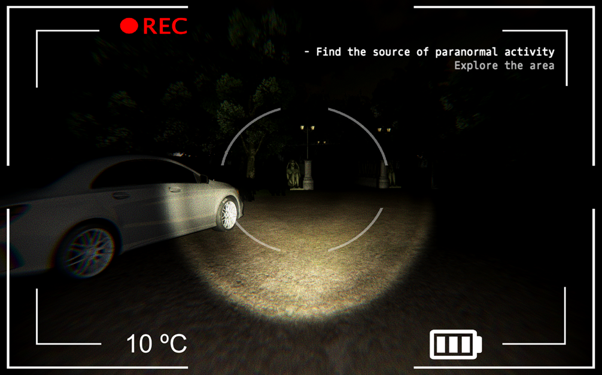
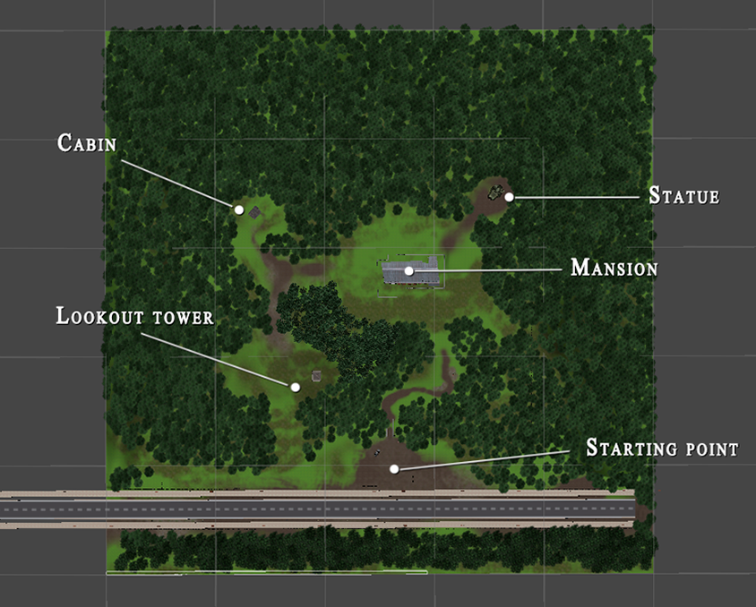
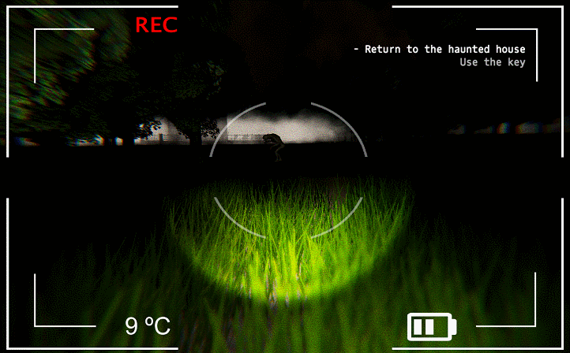
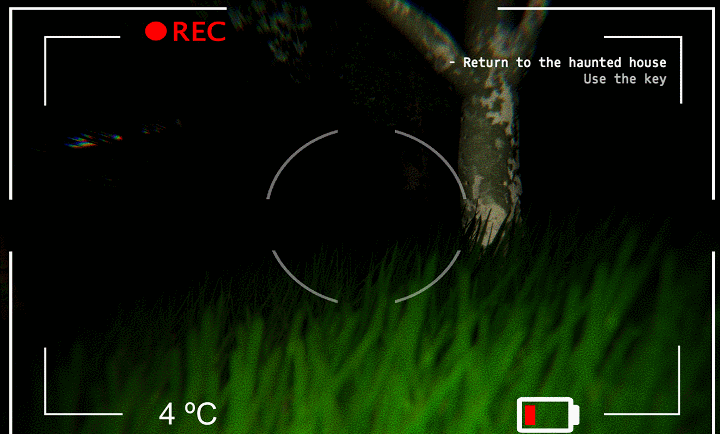
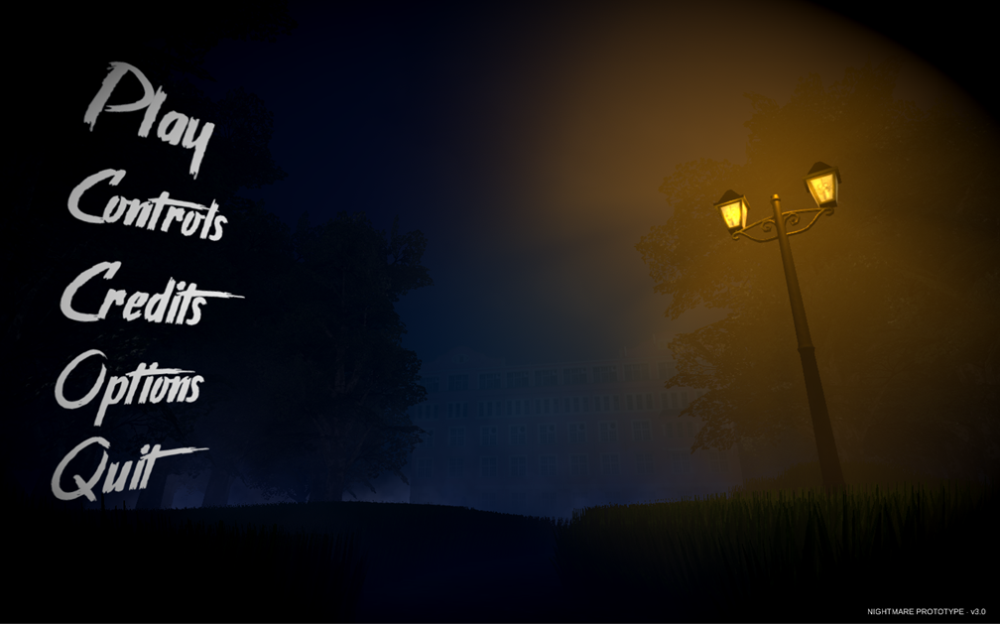

The concept behind 'Nightmare' was simple: I challenged myself to builda horror game prototype in just 24 hours.
I've always been fascinated by survival horror as a genre, particularly by how developers manipulate player psychology through elements like music, sound, and level design to evoke fear in precise and effective ways.
It was this fascination that motivated me to put into practice the theoretical concepts I had been learning on my own. That's how 'Nightmare' was born—a special prototype I developed in 2018 while I was learning to use Unity and program in C#. It's probably one of my oldest projects, and while it's not without its flaws, I hold a special fondness for it because of everything I learned throughout its development.
I set out to complete 'Nightmare' in around 24 hours. The goal was simple yet demanding: to create an experience capable of keeping the player entertained for at least five minutes. Given the limited time and scarce resources available, I had to carefully define the scope of the project to ensure it was both viable and coherent.
 I developed 'Nightmare' while I was still learning Unity and C#. I had limited resources at the time,but an immense eagerness to make a survival horror game.
I developed 'Nightmare' while I was still learning Unity and C#. I had limited resources at the time,but an immense eagerness to make a survival horror game.
For 'Nightmare', my main source of inspiration was 'Slender: The Eight Pages (2012)', a game whose simple premise captivated so many players at the time that it's hard for me to think about it without feeling a sense of nostalgia.
In 'Slender: The Eight Pages', the player freely explores a dark forest in search of eight hidden pages, all while being hunted by a supernatural creature called Slenderman. If Slenderman catches the player, the game ends.
I decided that 'Nightmare' should also take place in a forest—not only because of the unsettling atmosphere it provides, but also because it's a practical and easy environment to build. With just a few natural assets—trees, grass, rocks—spread across a terrain, it's possible to craft a convincing setting with minimal resources.
I also added four distinct landmarks that stood out clearly from the rest of the environment: a lookout tower, a giant statue, a mansion, and a cabin. Each one was designed to serve as a visual reference point and reinforce the identity of the map, helping players orient themselves within an open world.

The forest needed more than just trees and rocks—it required distinctivepoints of interest to help players explore the map.
I asked myself what the core objective of the game should be—what condition would define victory. I didn't want to replicate what 'Slender: The Eight Pages' had already done, so I chose to introduce a small narrative element into the prototype: the player would take on the role of an investigator that has to find the source of the paranormal that haunts the forest.
With this decision, the experience shifted toward a more narrative-driven approach rather than a purely systemic one. The player was no longer chasing eight scattered pages, but instead following a clear goal wrapped in a short story.
 Introducing landmarks, such as the lookout tower, provides players with clear reference points,helping them stay oriented and avoid getting lost in the forest.
Introducing landmarks, such as the lookout tower, provides players with clear reference points,helping them stay oriented and avoid getting lost in the forest.
Horror films and video games typically rely on two key elements to instill fear in their audience: tension and threat. Tension refers to perceived danger, while threat is the danger that's actually present. For the experience to work as intended, I needed to cultivate both.
To build tension, I invested time in carefully selecting ambient sounds, eerie music, and chilling SFX. Audio is one of the most powerful tools for shaping the player's perception—I needed them to believe that “something” was lurking between the trees, even if it wasn't there. Reinforcing the darkness of the environment also played a crucial role in amplifying discomfort and vulnerability.
But suggested fear alone wasn't enough—there had to be a real threat. That's why I introduced enemies I called “specters”. Their AI was simple, operating in two states: patrol and attack. While patrolling, they moved cyclically between three points on the map. If the player got too close, they switched to attack mode, charging toward them at full speed. If a specter managed to touch the player, the game was over. The problem was that, due to the map's darkness, players often triggered the attack mode without realizing it. In other words, they needed a way to detect when an enemy was nearby to avoid unfair deaths.
To solve this, I gave specters occasional roars to increase atmospheric tension and alert players to their presence. I also added a thermometer to the interface showing the ambient temperature—typically stable at 10 °C, the forest's default. If the temperature began to drop, it meant a specter was nearby.
Inspired by the ghost-exorcising camera mechanic featured in the 'Fatal Frame' series, I integrated a similar feature into 'Nightmare'. The player could use a camera to make specters disappear, and the closer they were when the photo was taken, the more damage they would receive.

To defeat the specters, the player must take a photograph of them. The closer the specter is to the camera at the moment the photo is taken, the more damage it receives.

If a specter reaches the player, it's an instant game over, forcing them to start a new game from scratch—making the threat genuinely real.
While on patrol, specters follow a simple pathing routine: they move from point A to point B, then to point C, and finally back to point A. Their AI is intentionally minimalistic.
Specters also emit occasional roars. These sounds serve as an early warning system, helping players detect their presence and remain alert.
The final design challenge for 'Nightmare' was its lack of a core survival horror element: resource management. To address this, I implemented a classic yet effective mechanic—a flashlight. It became the player's only tool for navigating the forest without being completely engulfed in darkness. However, using it consumed battery power, adding another layer of tension. To avoid running out of light, the player had to explore the environment carefully and collect batteries scattered throughout the terrain to recharge the flashlight.
 The flashlight's battery management system allowed my prototype tofully embrace the identity of a true survival horror game.
The flashlight's battery management system allowed my prototype tofully embrace the identity of a true survival horror game.
Once the core design was defined, I got to work. I quickly assembled the scene in Unity and shaped the terrain to avoid a flat layout—adding small hills, dirt paths, and natural reliefs to create visual variety and guide exploration.
The game began at the edge of the forest, next to the car in which the protagonist had arrived. Although the map was entirely open, I applied level design composition principles to subtly guide the player toward a specific path that led to an abandoned mansion—the central focus of the experience.
 The mansion in the middle of the forest.
The mansion in the middle of the forest.
The player would discover that the mansion's door was locked, prompting them to venture deeper into the forest to find a key hidden in a cabin. Up to that point, the specters would remain inactive, but collecting the key would trigger their presence, turning the journey back into a tense challenge.
The experience would conclude once the player successfully avoided the specters and used the key to finally enter the mansion.
However, after implementing all the elements and confirming that everything worked properly, I realized that players were struggling to understand the game's objective. To fix this, I added a dynamic text system to the interface that guided them step by step, indicating what to do at each moment.
I was satisfied with the result. Although years of experience have since allowed me to spot various design and execution flaws—such as poor lighting, which stemmed from my lack of knowledge in that area at the time—I hold a special fondness for this prototype. What stood out the most was watching several friends play it for the first time and seeing them genuinely scared, despite how simple the concept was. That spontaneous reaction was the clearest sign that, even with limited resources, I had managed to convey what I set out to create.

I've revisited 'Nightmare' from time to time to address its shortcomings, experimenting withenhancements like adding volumetric lighting to improve the visual atmosphere.